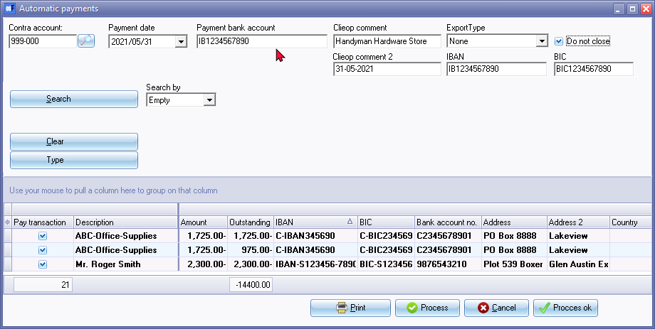
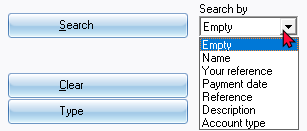
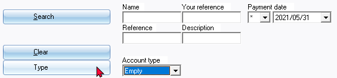
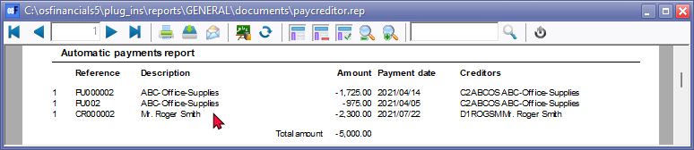
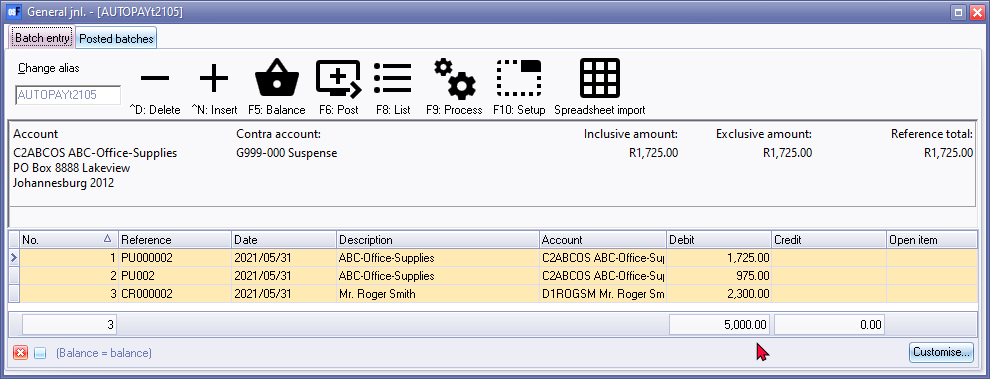
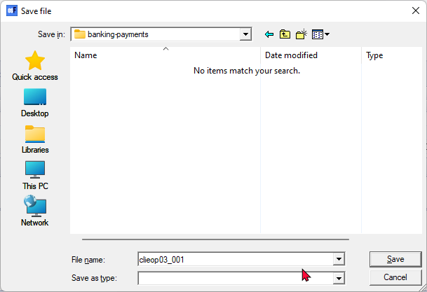
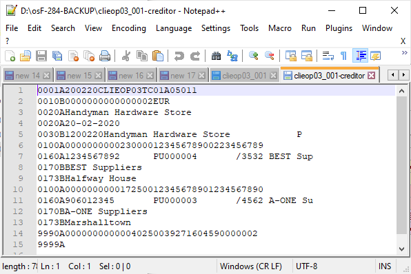
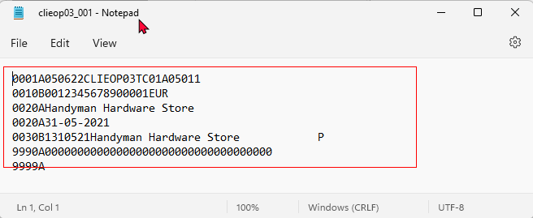
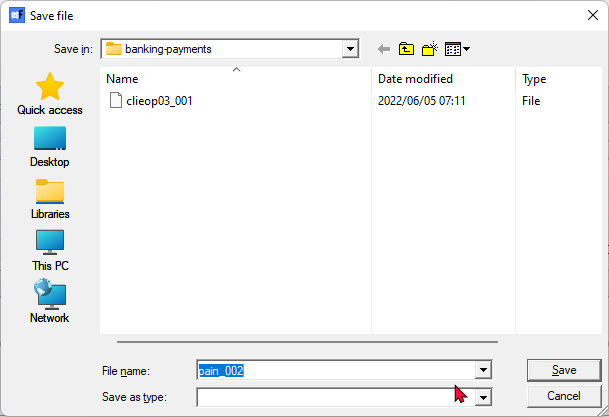
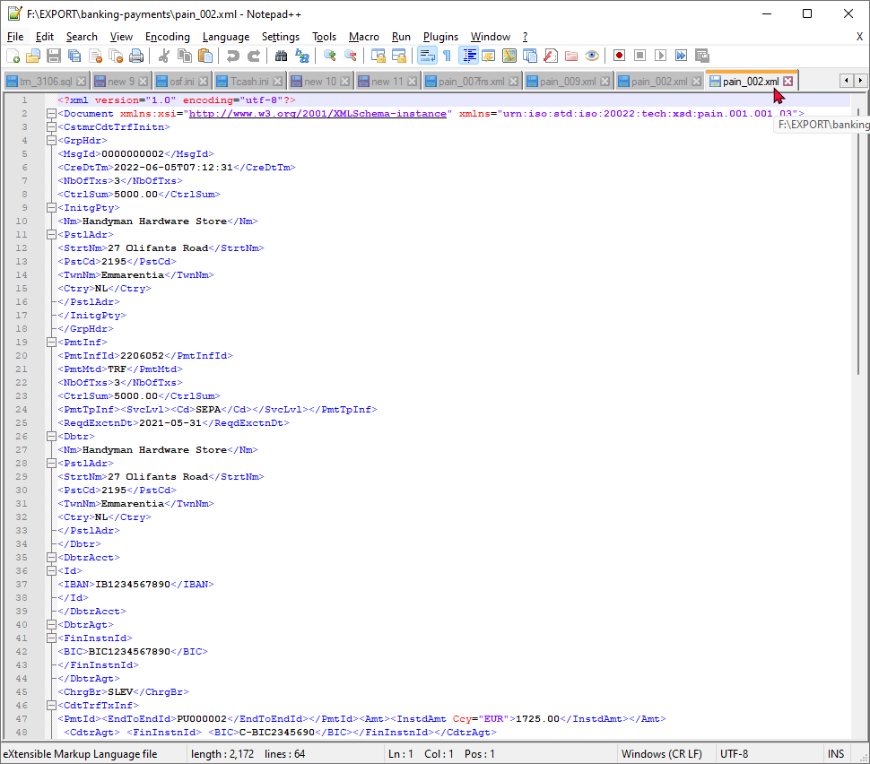

Automatic payments
|
|
You may use the "Creditor balances at date" batch processing option to generate all Creditor accounts with outstanding balances as at the specified date. The transactions will automatically be imported into the Payments journal. |

You may pay your creditor (supplier / vendor) accounts, as well as refunds to debtor (customer / client) accounts (with credit balances, which need to be refunded) via the electronic banking system. The transactions for accounts with outstanding transactions and balances will be transferred into the "Automatic payments" screen, where you may select the accounts and outstanding amounts you need to pay.
The accounts which have open or outstanding amounts will be listed. The (outstanding amount) balances are transferred to an intermediate account or clearing account on the date of the transactions.
Once the payment is cleared at the bank (on the due date) payment is deducted from the Bank account and will appear on the bank statement. When you allocate the transaction on the bank statement, the intermediate account or clearing (account contra account) will be debited.
|
|
Before using this feature, bank accounts need to be entered the Accounting information tab of Creditor (supplier / vendor) accounts (Default ribbon). |

To pay accounts using the automatic payments feature:
- On the Default ribbon, select Batch entry (F2).
- Select the General journal or any other batch type.
- Click on the Open button. The "Batch entry" screen for the selected batch will be displayed.
- Enter the Alias (batch name) and press the Enter key.
- Click on the F9: Process icon. The "Process the batch" options screen will be displayed.
- Select the "Automatic payments" option, and click on the OK button. The "Automatic payments" screen is displayed:

|
|
Debtor (customer / client) accounts, with a credit balance, which need to be refunded, may also be included in this "Automatic payments" feature. |

|
|
See - |
- All the creditors (supplier / vendor) accounts with transactions will be imported.
- Select and enter the following:
- Contra Account - Select the intermediate account. This is basically a clearing account for the payments to creditor (supplier / vendor) accounts.
|
|
It is recommended that a General ledger account, which is linked to the Current liabilities Account group be selected. |
- Payment Date - Enter or select the date for which you need to process payments for creditor (supplier / vendor) accounts.
|
|
The transactions on this date to the intermediate account or clearing account (Contra account), and calculate the due days as specified in the Due days field on the Accounting information tab of the selected creditor (supplier / vendor) account. |
- Create Clieop File - If you select this option, you need to specify the name for the Clieop file.
|
|
The Clieop file is a general accepted file format that can be read into a bank program for payments. |
- Payment Bank Account - Enter the payment Bank account.
- Clieop comment - By default, this will be the system date in the format "DD-MM-YYYY". Enter a comment for the transaction.
- Export Type - "None" is the default option. This will transfer the selected transactions into the "Batch entry" screen. If you select the following export types you need to save a export file before the selected transactions is transferred into the "Batch entry" screen:
- Create a clieop file - Create an export file.
- pain.001.001.03 - Create an export file in the XML Document type.
|
|
See - |

- Do not close - By default, this option is not selected. If this option is selected, the Process ok button will be available.
- Search and filter options -


- Check that the payment information and outstanding amounts for each account is correct.
|
|
If you do not wish to pay an account at this stage, deselect (remove the tick) the "Pay transaction" field next to the selected creditor. If the "Pay transaction" field is not selected, no transactions will be generated for the account and the account will be excluded from the "Automatic payments report". |
- Click on the Print button to print a "Automatic payments report" for all accounts with outstanding amounts (balances) for which the "Pay transaction" field was selected. An example of the "Automatic payments report", is as follows:

- Click on the Process button. All accounts with outstanding amounts (balances), for which the "Pay transaction" field was selected will be imported into the selected batch (journal).
|
|
If "Create a clieop file" or pain.001.001.03" is selected as the "ExportType" option, a "Save As" screen will be launched, in which the export file needs to be saved. Thereafter, all selected creditor (supplier / vendor) accounts, as well as debtor (customer / client) accounts, if any, with outstanding amounts (balances) for which the receive transaction field was selected, will be imported into the selected batch (journal). |

|
|
Debtor (customer / client) accounts, with a credit balance, which need to be refunded, may also be included in this "Automatic payments" feature. |
|
|
Once you have finished entering / editing the transactions in the batch you need to: - |
Export type : Clieop file
If the "Create Clieop file" option was selected as the "ExportType" field, the "Save As" screen will be displayed, if you click on the Update button of the "Automatic payments" screen.

Select the directory in which you need to store the file and specify the name for the file.
|
|
|
|
If the bank accounts is not entered for a creditor (supplier / vendor) account (on the Accounting information tab, a message similar to this will be displayed. "No bank account for C2ABCOS ABC-Office-Supplies |
Click on the Save button to save and generate the "clieop" export file. An example of the exported "clieop" file, is as follows:

Export type : pain.001.001.03
If the "pain.001.001.03" option was selected as the "ExportType" field, the "Save As" screen will be displayed, (after the "Automatic receipts report" is printed) if you click on the Update button of the "Automatic receipts" screen.

Click on the Save button. This will create an XML Document file type for the "pain.001.001.03" "ExportType".
|
|
The export file name will be generated as "pain_002", etc. These numbers indicate the version number of the file export. |
An example of the "pain.001.001.03" export file, is as follows:
